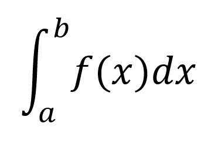
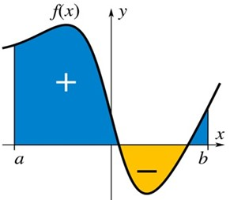
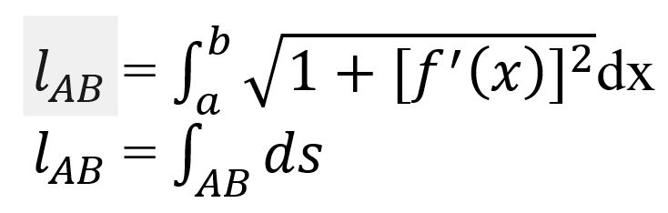

MỘT SỐ LĨNH VỰC KHÁC
Một số ứng dụng của toán cao cấp trong lĩnh vực này:
- Thiết kế và phát triển các mô hình máy học và trí tuệ nhân tạo, như mô hình hóa mạng nơ-ron, mô hình hóa học và mô hình hóa tối ưu.
- Tính toán và phân tích dữ liệu trong nhiều lĩnh vực khác nhau, như thống kê, khoa học dữ liệu.
- Đo lường chiều dài trong may mặc,...
Một Số Ví Dụ
Tích phân trong ngành dệt may
Cho hàm một số biến thực f(x) xác định trên miền giá trị thực [a, b]. Tích phân xác định (definite integral)
từ a đến b của f(x), ký hiệu được định nghĩa là diện tích của một vùng trong không gian phẳng Oxy được giới hạn bởi đồ thị của hàm f(x), trục hoành, và các đường thẳng x = a và x = b, sao cho các vùng trên trục hoành sẽ được tính vào tổng diện tích, còn dưới trục hoành sẽ bị trừ vào tổng diện tích.
Để đo chiều dài của một cung đường, ta có thể dùng tích phân đơn hặc tích phân đường loại một bằng các công thức sau:
Trong lĩnh vực may mặc, việc đo đạc chính xác chiều dài của một đường cong như đường cổ áo, nách áo, đường đũng quần.... là rất quan trọng để có thể lắp ghép các chi tiết như viền cổ, tra tay áo vào thân áo, ghép đũng trước và đũng sau... một cách ăn khớp, đảm bảo tính thẩm mỹ, tiết kiệm nguyên phụ liệu nhất là khi may trên dây chuyền với số lượng lớn. Để giải quyết vấn đề này, chúng ta có thể tính toán chính xác chiều dài của các đường cong trên mẫu ban đầu bằng ứng dụng của tích phân, rồi tiến hành cắt, ráp mẫu với số lượng lớn.